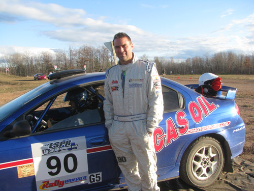
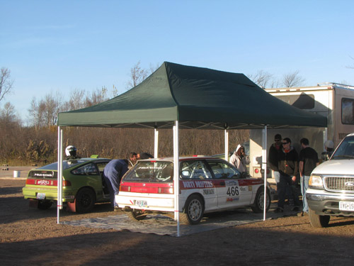
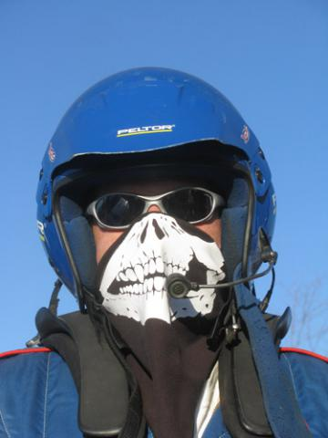

Cody Crane, Driver, #649 Honda CRX
BB: You towed all the way out here from Oregon. What does it feel like to be out here?
CC: It's crazy! It's a little crazy to think that we're all the way out in Michigan to race.
BB: How do you figure your chances are this weekend?
CC: I think we have a pretty good chance. It would be hard to beat Lauchlin [O'Sullivan] and Doug [Shepherd] in those turbo cars, but we'll try.
BB: Did you do anything to the car since the last time you raced it?
CC: A little bit of work on the skid plate, that's pretty much it. Some seam welding on the motor mounts and stuff like that. Not much other than that.
BB: How was the drive out here?
CC: It was good! It went pretty good, only had to change one tire on the trailer.
BB: Do you have any particular goals for the weekend? Or are you just going to race your race and see what happens?
CC: Just go flat out, pretty much. Go as fast as I can.
BB: Good luck this weekend.
Jan Zedril, Driver, #708 Mitsubishi Lancer
BB: How has the season been going for you so far?
JZ: The season's been going really good, in Canada anyway. This will be our third event in the States. We just finished up the Canadian championship in two-wheel-drive, and we were first in that for this year. There's one more event in November, but we don't need to do that one so we decided not to. Just stay home and chill for a bit after a long season.
BB: So what are your goals for this weekend?
JZ: I think the goals are the same for every driver. It's MaxAttack!, so I think everyone's going to be MaxAttacking.
BB: How's the car running for you?
JZ: Excellent, no mechanical problems whatsoever.
BB: Good luck this weekend.
JZ: Thank you very much.

Lauchlin O'Sullivan, Driver, #90 Dodge SRT-4
BB: Lauchlin, you won the New England Forest Rally round of the MaxAttack! championship, which gives you a slight edge mathematically for the prestigious Jake Himes Cup. What are your plans for the weekend?
LO: To win the cup, simply put. It's just great being out here, at the rally. We just drove our first stage [the shakedown] and are making some adjustments. We're going to go out there on the next stage and have some fun, see how well the suspension works and everything, and kinda take the car from there. Regarding the championship, it's nice to have that little extra in hand in case something happens during the event.
BB: You drove an SRT-4 at the New England Forest Rally, yet you are in a different SRT-4 at this event. How did that come about?
LO: I think it stems off of Doug Shepherd's bucket list. He's almost won this event a few times, and this is the one event that's kind of gotten away from him. It was very important for him to do the event this year. He let Don [Jankowski, car owner] know early in the year that he wanted to do it, and Karen's in there with him, so we were lucky enough to find a well-recommended car with some good guys running the car. It turns out to be another SRT-4. We'll go head-to-head, it's going to be quite interesting. He's going for an overall, and I'm going for a championship. But it is MaxAttack!, so we'll see how that all turns out.
BB: Do you notice any performance differences, or any differences in handling between the two SRT-4s?
LO: Right off the bat, the steering's a little heavier in this car, so the fine adjustments are a little more difficult. But we're moving the seat around to make it easier for the angle of my arms to compensate for that. That's what we're doing right now, then we're going to go out there again, and take some more notes, I think just to adjust things a little bit here and there, and we'll be ready to go.
Jim Scray, Driver, #510 Datsun 510
BB: Jim, how did you come about rallying a 510? How did you start rallying in general?
JS: We started out rallying just how most people do, specatating and working controls, and that sort of thing. Then we moved up to crewing for different people, Dennis Martin, Dmitri Kishkarev, and one of Dennis' co-drivers, Kim DeMotte, rallied 510s back in the day. We told him one day that we were looking to get a car of our own, and he said he had a couple laying around, and one thing led to another, and we bought it from him, and here we are.
BB: How many times have you run the Lake Superior Rally?
JS: This will be our second year. Last year we did pretty well, we got third in the Keweenaw Rally and then fell back a bit on the second day. It's a great rally, it's been a lot of fun.
BB: How do you think you're going to fare in the MaxAttack! challenge this weekend? Do you have any goals or aspirations?
JS: The main goal always is to just finish. With the amount of firepower that's here today I don't know how we're going to do, against people like Lauchlin and Burmeister and stuff like that. If we can finish in the Top 10 I think we'd be really good.
Colin McCleery, Driver, #555 Ford Sierra
BB: Colin, what does the Ford Sierra "Pikes Peak Special" mean on the entry list?
CM: Three years ago we did race this car up Pikes Peak. That was a thrill for me and we had a great time back then. It's always been a rally car, but we prepared it just for Pikes Peak, and now we're back to rallies with it.
BB: So what sort of motor do you have in this one?
CM: This one has a five-litre Ford engine in it, with just a few modifications.
BB: How many times have you run the Lake Superior Rally now?
CM: Oh boy, it's gotta be approaching 20 times in the last 25 years. There's not too many times I've missed.
BB: How do you think your chances are going to be this weekend in the MaxAttack! challenge?
CM: [laughs] It remains to be seen. I havne't rallied in three years now, so I'm a bit rusty. We'll get going and see what happens. It's going to be fun.
Eric Burmeister, Driver, #42 Mazdaspeed3
BB: Eric, this is one of your home rallies, if not the home rally. How excited are you about the weekend?
EB: This is the rally that started it all for me. Coming up here when I was about eleven years old with my dad, and watching the guys race through the forests here. Buffum and Woodner, Purzycki and all the fast guys. It was a lot of fun! So yeah, I'm really excited because of what LSPR stands for, over all the years. This was kind of Jake's home ground rally [Jake Himes] as well, that kind of brings it all home with the MaxAttack!.
BB: How's the Mazdaspeed3 running for you today? You just finished your first lap of the practice stage.
EB: It was pretty good. We had a little axle mishap this morning; I've got some new axles that are a different design from what we used to use, and we realized the service life of them. So we've got it all sorted out and fixed up, and we're ready to go. We went out there for the practice stage, did one lap of it. I'm familiar with the stages of Kenton, Sidnaw, Herman, and stuff like that, enough to know that what the shakedown stage isn't real indicative of what the stages are going to be like out there. We aren't going to learn anything from it, I can't make any adjustments that will help me on the actual rally
BB: You finished fourth at the New England Forest Rally, so you're actually one of the front-runners of the people who have run one of the qualifying events. Do you have any tactics in your mind for the weekend?
EB: No tactics. Foot on the floor, have fun. That's all it is. The dynamic is going to be kind of great. Lauchlin O'Sullivan is driving a different SRT-4 than what he drove at his qualifier in Maine. Doug Shepherd is in Lauchlin's normal SRT-4. You've got two Dodge Neons that will be running up there very fast. To try and hang with those guys is going to certainly be a challenge. It will be tight competition from everybody, it's Cody Crane's first time here, so it will be exciting to see him run. It's cool to see Brian Gottlieb in the car that Andrew [Havas] had out in Oregon a couple years ago. It's a great, great group here, and it's always awesome to see Matt and Silas Himes running as well.

Brian Gottlieb, Driver, #466 Honda Civic
BB: Brian, throughout your rally career you've used a Toyota FX-16, but that car is sadly no longer with us and you now have a Honda Civic. How do you find the difference between the two cars?
BG: It's like night and day. The FX-16 I put together myself, and I didn't really know anything about putting a rally car together. I know more now than I did then, but this one's really well-built, and really balanced, and it drives like it's supposed to. It's a blast.
BB: This is your first time rallying out in Michigan. What are your impressions so far!
BG: It's cold?
BB: Hey, this is balmy for LSPR.
BG: It's nice. We've only seen the practice stage. I guess there is this one rough section. It was a long trip from Portland, but it was pretty fun.
BB: Any adventures on the way?
BG: A couple of trailer issues, a couple of RV issues, nothing really major. It was pretty uneventful.
BB: Do you have any plans for the weekend, or are you just going to go MaxAttack! style?
BG: Yeah, MaxAttack!, get used to the new car.

Dave Shindle, co-driver for the #42 Mazdaspeed3, gets in the Halloween spirit.